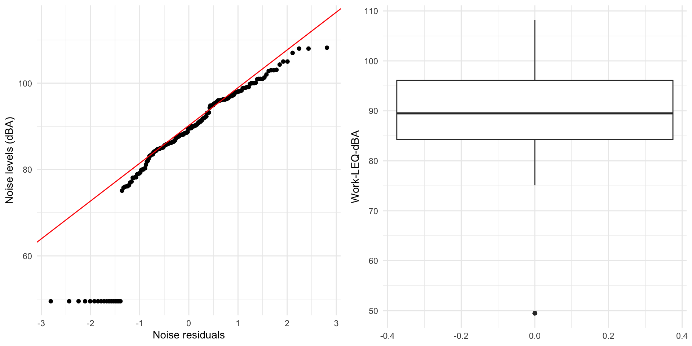
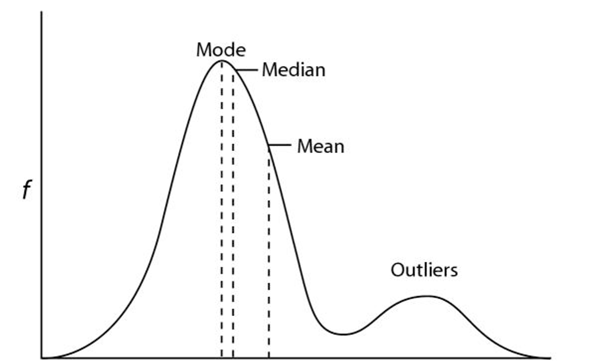
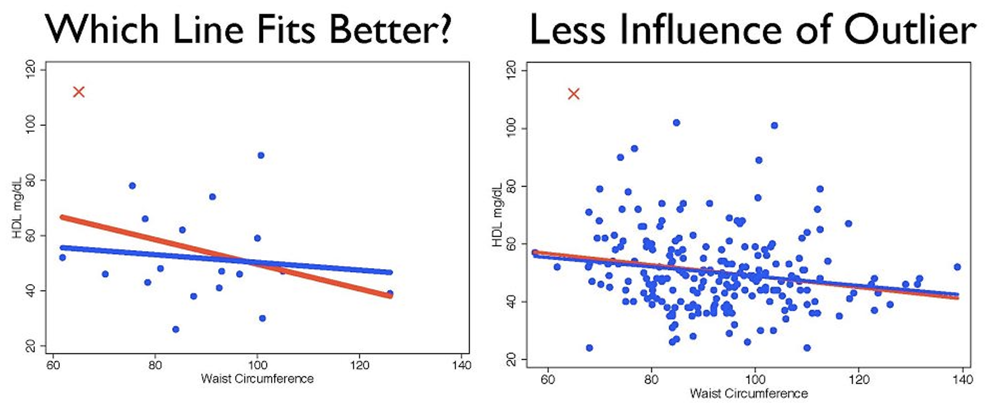

Data cleaning and assignment 1 (Lecture 6)
What we’ll cover today
Data cleaning/outliers
R
Assignment 1
Data cleaning
Process of identifying/correcting corrupt or untenable information to ensure data integrity
- May mean alteration or removal of data
Critical element of exposure analysis
Insuring completeness of data
Placing constraints/range limits on values
Comparing values with well-understood relationships for validity
Quality control for exposure data
Standard operating procedures
- In place? Followed?
Exposure measurement equipment
- Known and consistent? Values outside of measurement range?
Equipment calibration
- Equipment calibrated regularly? Did all measurements meet calibration specs?
Data entry
- Any untenable data? Programming mistakes?
Outliers

Outliers
Observation that deviates markedly from other observations
Outlying point may indicate bad data
May have been measured or coded incorrectly
If erroneous, delete from analysis (or correct)
May be due to random variation or may indicate something scientifically interesting
Typically do not want to simply delete
May need to use robust statistical techniques
Identifying outliers
Treatment of outliers
Outlier labeling
- Flag potential outliers for further investigation
Outlier treatment
Formally test whether points are outliers/plausible (e.g., Cook’s distance in linear regression)
Delete/correct as appropriate (note – deletion generally frowned on, particularly in smaller datasets)
Outlier accommodation
Use robust statistical techniques (median not mean)
Consider whether data need to be transformed (e.g., perhaps distribution is lognormal, not normal?)
Treatment of outliers
Evaluate reasonableness
Classify as plausible, highly implausible, impossible
Consider body temperature
38 degrees C reasonable; 38 degree F not
Evaluate importance
Leverage (value of x is far from mean of x)
Influence (relationship between x and y different than other x and y points)
Outliers: (data) size does matter

On to R
Data cleaning! Check to see if we have any missing noise samples with is.na()
# A tibble: 0 × 36
# ℹ 36 variables: Subject-ID <dbl>, Job-title <chr>, Gender <chr>,
# Measurement date <dttm>, Site-type <chr>, County <chr>,
# Age-baseline-years <dbl>, Work-LEQ-dBA <dbl>,
# Measured-shift-length-mins <dbl>, Post-cal-value-dBA <dbl>,
# Perceived-type-of-noise-shift <chr>, Perceived-noise-level-shift <chr>,
# LMAX-dBA-shift <dbl>, Primary-task-shift <chr>,
# Other-nearby-noise-shift <chr>, Usual-shift-length-hours <dbl>, …More R
Example of creating new columns (mutate())
# A tibble: 201 × 4
`Work-LEQ-dBA` average_noise noise_rank average_noise_diff
<dbl> <dbl> <int> <dbl>
1 49.5 87.2 1 -37.7
2 49.5 87.2 1 -37.7
3 49.5 87.2 1 -37.7
4 49.5 87.2 1 -37.7
5 49.5 87.2 1 -37.7
6 49.5 87.2 1 -37.7
7 49.5 87.2 1 -37.7
8 49.5 87.2 1 -37.7
9 49.5 87.2 1 -37.7
10 49.5 87.2 1 -37.7
# ℹ 191 more rowsEven more R
Bivariate analysis examples. We can use the janitor package to get tidyverse friendly tables
Last little bit of R
R allows _ or . in column names, but not other characters that can be an operator (e.g., -)
I’m sick of using the back ticks (`) to call our column names
I could use rename() and manually change all of the column names one by one (too cumbersome)
Instead, we can clean column names with the janitor package and clean_names() function
# A tibble: 201 × 36
subject_id job_title gender measurement_date site_type county
<dbl> <chr> <chr> <dttm> <chr> <chr>
1 1 Laborer M 2010-01-04 00:00:00 Civil King
2 2 Laborer M 2010-02-03 00:00:00 Civil Pierce
3 3 Laborer M 2008-06-01 00:00:00 Commercial Pierce
4 4 Laborer M 2010-06-15 00:00:00 Commercial Snohomish
5 5 Laborer Male 2011-10-02 00:00:00 Road Kitsap
6 6 Laborer Male 2010-11-15 00:00:00 Road Thurston
7 7 Laborer M 2012-09-01 00:00:00 Civil King
8 8 Laborer M 2011-07-01 00:00:00 Civil King
9 9 Laborer M 2010-11-05 00:00:00 Commercial Pierce
10 10 Laborer M 2012-12-01 00:00:00 Commercial Snohomish
# ℹ 191 more rows
# ℹ 30 more variables: age_baseline_years <dbl>, work_leq_d_ba <dbl>,
# measured_shift_length_mins <dbl>, post_cal_value_d_ba <dbl>,
# perceived_type_of_noise_shift <chr>, perceived_noise_level_shift <chr>,
# lmax_d_ba_shift <dbl>, primary_task_shift <chr>,
# other_nearby_noise_shift <chr>, usual_shift_length_hours <dbl>,
# usual_hours_worked_per_week <dbl>, usual_weeks_worked_per_year <dbl>, …This forces all column names to be lowercase and “snake_case”